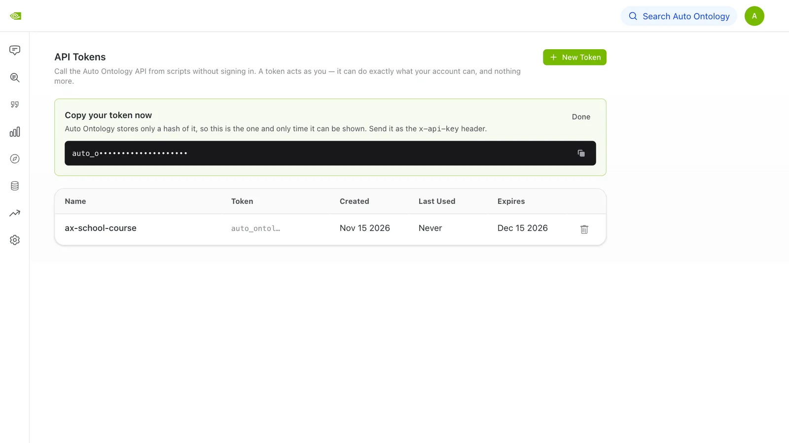
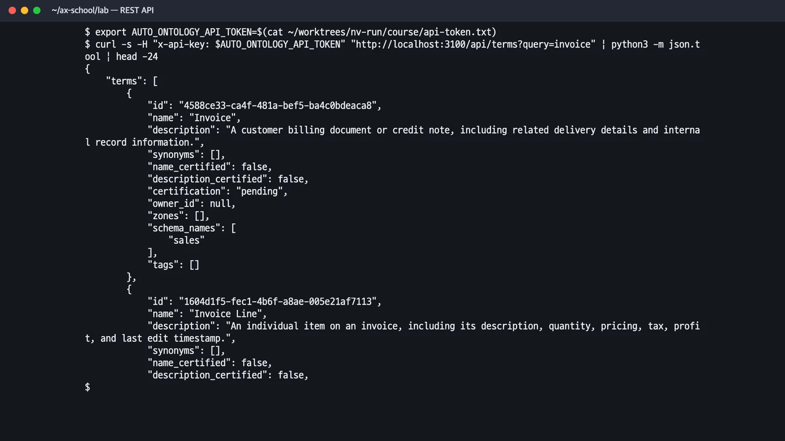
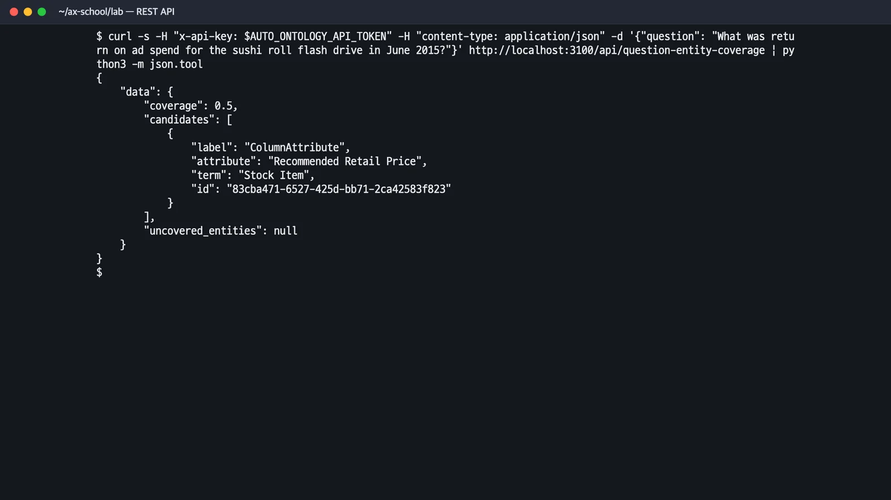
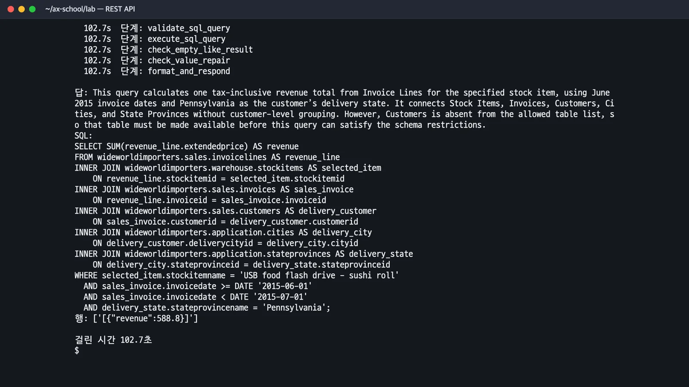

사람의 개입 없이 실행되는 스크립트·배치·다른 시스템은 MCP 대신 REST API와 API 토큰을 씁니다. 사용자 메뉴에서 토큰을 만들고,
curl로 용어를 찾고, 답변 가능성을 확인하고, 짧은 파이썬 스크립트로 질문을 보내 서버가 보내 주는 진행 단계와 답을 스트림으로 받습니다.
무엇을 · 왜#
공개 API의 진입점은 웹 앱(공식 3000, 이 교재 3100) 하나입니다. 웹 앱이 사용자를 확인하고 권한을 검사한 뒤 백엔드로 넘깁니다. 브라우저는 세션 쿠키를, 스크립트는 API 토큰을 씁니다.
| 항목 | 내용 |
|---|---|
| 토큰 만들기 | 오른쪽 위 사용자 메뉴 → API Tokens → New Token (만료: Never · 30 days · 90 days · 1 year) |
| 보내는 법 | 머리글 x-api-key: <토큰> 또는 Authorization: Bearer <토큰> |
| 권한 | 토큰은 발급한 사람의 권한으로 동작합니다. 그 사람의 역할에 허용된 작업만 할 수 있습니다 |
| 보관 | Auto Ontology는 토큰의 SHA-256 해시만 저장합니다. 값은 만들 때 한 번만 보입니다 |
| 무효화 | 토큰을 지우거나 주인을 지우면 다음 요청부터 401. 토큰으로 토큰을 만들 수는 없습니다 |
API의 87개 작업이 OpenAPI 명세(docs/openapi/auto-ontology-api.json)에 있습니다. 이 장에서는 셋만 씁니다.
| 작업 | 경로 |
|---|---|
| 용어 찾기 | GET /api/terms?query=… |
답할 수 있나(MCP check_answerable과 같음) |
POST /api/question-entity-coverage |
질문하기(Chat·MCP ask_question과 같음) |
POST /api/chat/completions — 답이 SSE(server-sent events)로 흘러옴 |
따라 하기#
- 토큰을 만듭니다. 오른쪽 위 머리글자 단추 → API Tokens → New Token. 이름(예:
ax-school-course)과 만료(30 days)를 고르고 Create token을 누릅니다. 「Copy your token now」 상자의 값을 바로 복사해 비밀 관리 도구나 권한 0600 파일에 둡니다. 아래 그림은 토큰 값을 가렸습니다.
API 토큰 — 만들 때 한 번만 보이는 값(가림)과 토큰 목록 - 환경 변수에 넣고 용어를 찾습니다. 토큰 값을 명령에 직접 쓰지 말고 파일에서 읽어 변수에 둡니다.
응답은
export AUTO_ONTOLOGY_API_TOKEN=$(cat ~/secrets/auto-ontology-token.txt) curl -s -H "x-api-key: $AUTO_ONTOLOGY_API_TOKEN" \ "http://localhost:3100/api/terms?query=invoice" | python3 -m json.tool | head -24{"terms": […], "total": …}모양이고, 용어마다name·description·synonyms·certification이 들어 있습니다. 이번에는 Invoice와 Invoice Line이 나왔습니다.
curl로 용어 찾기 - 답변 가능성을 확인합니다. MCP의
check_answerable이 부르는 바로 그 API입니다.curl -s -H "x-api-key: $AUTO_ONTOLOGY_API_TOKEN" -H "content-type: application/json" \ -d '{"question": "What was return on ad spend for the sushi roll flash drive in June 2015?"}' \ http://localhost:3100/api/question-entity-coverage | python3 -m json.tool"coverage": 0.5와 후보 하나(Stock Item의 Recommended Retail Price)가 돌아왔습니다. 6장의 MCP 결과와 같습니다.
coverage 0.5 - 질문을 스트림으로 받습니다. 아래 스크립트(
ask_api.py, 약 45줄)는 용어를 찾고, 포함 비율을 확인하고, 질문을 보내step이벤트(진행 단계)를 시간과 함께 출력하다가result이벤트에서 답·SQL·행을 꺼냅니다. 질문 하나에 몇 분이 걸릴 수 있으니 시간 제한은 900초로 둡니다.with api.post(f"{BASE}/api/chat/completions", json={"question": question}, stream=True, timeout=900) as r: for line in r.iter_lines(decode_unicode=True): if not line or not line.startswith("data:"): continue payload = line.removeprefix("data:").strip() if payload == "[DONE]": break event = json.loads(payload) if event["type"] == "step" and event.get("phase") == "end": print(f" {time.time() - t0:5.1f}s 단계: {event.get('node')}") elif event["type"] == "result": answer = event["answer"] print("\n답:", answer["response"]) print("SQL:\n" + (answer.get("sql_code") or "(없음)")) print("행:", answer.get("sql_response_from_db")) elif event["type"] == "error": raise SystemExit(event["message"])단계가python3 ask_api.py "What was revenue for the USB food flash drive - sushi roll in Pennsylvania in June 2015?"question_intent(2.1초) →question_extraction→retrieve_candidates→prepare_candidates→construct_sql_from_candidates(32.0초) →validate_sql_query→reconstruct_sql(44.0초, SQL 다시 짜기) … 순서로 흘러왔고, 102.7초 만에 README와 같은 경로의 SQL과[{"revenue":588.8}]가 왔습니다. 5장 끝에서 만든 Revenue 정의가 쓰였습니다.
ask_api.py — 단계 스트림과 답(588.8)
대화를 이어 가려면 요청에 conversation_id(클라이언트가 만든 UUID)를 넣고 같은 값을 계속 씁니다. 백엔드는 최근 다섯 턴까지를 보고 「8월은요?」 같은 후속 질문을 완전한 질문으로 재작성합니다. 앞 턴의 [DONE]을 받기 전에 같은 대화로 다시 보내면 409 Conversation in progress가 돌아옵니다. API로 만든 대화는 웹 화면의 /chat?focus=<conversation_id>에서 그 사용자에게 보입니다(공식 문서 docs/conversation-api.md).
백엔드(3001)를 직접 부르지 마세요
백엔드는 웹 앱이 넘겨주는 사용자 헤더를 검증 없이 신뢰합니다. 스크립트는 언제나 웹 앱 주소로 부르고, 3001·3002는 외부에서 접근할 수 없게 둡니다.
막히면#
막히면
- 토큰 목록에
auto_ontol…앞부분만 보이고 값을 다시 볼 수 없음 — 값은 만들 때 한 번만 보입니다. → 잃어버렸으면 새로 만들고 옛 토큰은 휴지통 단추로 지웁니다. - 설정(Settings)에 API 토큰 메뉴가 없음 — 토큰은 오른쪽 위 머리글자 단추(사용자 메뉴) 안에 있습니다.
- 스크립트가 중간에 끊김 — 질문 하나가 몇 분 걸릴 수 있습니다. →
timeout=900처럼 넉넉히 둡니다.
확인 문제#
1. 같은 서버를 부르는데 왜 MCP는 OAuth, REST API는 토큰을 쓰나요?
MCP는 사람이 쓰는 에이전트(클라이언트)가 사람 대신 부르므로, 그 사람이 직접 로그인해 승인하는 OAuth로 권한을 그 사람에게 묶습니다. REST API는 사람의 개입 없이 실행되는 스크립트도 쓰므로, 발급한 사람의 권한으로 동작하는 토큰을 씁니다. 어느 쪽이든 권한은 계정에서 오고, 토큰을 지우면 바로 끊깁니다.
2. `/api/chat/completions`의 응답을 한 번에 받지 않고 스트림으로 읽는 까닭은 무엇인가요?
에이전트가 모델을 여러 번 차례로 부르며 수십 초에서 몇 분이 걸리기 때문입니다. step 이벤트로 진행을 보여 주다가 result 이벤트에서 답을 받고 [DONE]에서 끝냅니다.
마지막 장에서는 같은 예제를 uEngine Ontological Studio로 해 본 결과를 짧게 비교합니다.